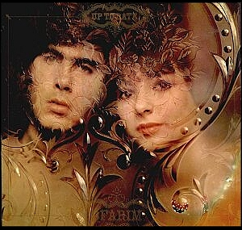

Saturday, November the 20th, 2004
back to: title, date or indexes

Here is an extract from Dobson's private journal, dated 20th November 1969:
For the past few weeks I have become increasingly fixated upon the young Israeli singing duo Esther and Abi Ofarim. Yesterday I dug out a reel-to-reel tape recording device from a jumble of abandoned equipment in the broom cupboard and made a looping tape, or tape loop, I think it's called, of the pair performing Lord Of The Reedy River. This is my favourite of their waxings, perhaps because in my dreams I like to think that I could one day be a lord or tsar or baron or potentate of a reedy river, a very reedy river, a river so choked with reeds and weeds and thin stringy green flora that the water is brackish and its surface covered in scum. One imagines the smell of this river being quite unbearable, and it being shunned even by dogs.
The song appears on last year's long player Up To Date, copies of which I think I will give out as Christmas presents this year, whether the recipients want it or not. I am toying with the idea of founding an Esther & Abi Fan Club, although I suspect one already exists. Of course, Lord Of The Reedy River is only one of their great tracks. I have become convinced that if music has a future, these personable youngsters are the key to it.
Another terrific thing about them is that so many anagrams can be made from “Esther And Abi Ofarim”, including “fat horse brain media”, “mashed airborne fiat”, “bear firm, oh Satan, die!”, “Moira's refined a bath”, “oh! train beside a farm”, “bards in fire at a home”, “for Theda Bara is mine”, “hamster foe in bad air”, and “a basin of mired earth”. I think that last one would make a great title for their next album, so if I can find out how to contact them I am going to write and suggest it.
I suppose I ought to mention that Ms Chew says their music is driving her crackers, and she has decamped to a seaside resort, even though it is November and the weather is exceedingly inclement. She has not even told me to which confounded pebbly shore she has gone, so I am quite bereft, and only the dulcet tones of Esther and Abi singing Lord Of The Reedy River, and indeed Sanie Cu Zurgálái, Purple Eyes, and Ack Värmeland, Du Sköna are keeping me from flinging myself off a parapet, as my grandfather did when he could no longer cope with his aversion to breakfast cereals, a tragic episode told in full in my pamphlet Cornflakes, Ready Brek, Special K and Suicide, which I am sad to note is now out of print.
Hooting Yard on the Air, November the 24th, 2004 : “JFK : The Unanswered Questions” (starts around 19:59)
Hooting Yard on the Air, March the 27th, 2008 : “A Cowboy Story” (starts around 23:56)